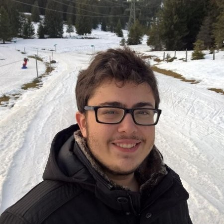

|  |
João Mário Künzle Ribeiro MagalhãesAnalista de Desenvolvimento de Sistemas
|
Tenho 23 anos e sou graduado em Engenharia Elétrica com ênfase Eletrônica pela Escola de Engenharia de São Carlos (EESC) da Universidade de São Paulo (USP). Durante minha graduação participei de várias atividades extracurriculares, dentre elas: fui membro do time de eletrônica do Warthog Robotics, fui membro do time de marketing da secretaria acadêmica do curso, também fui líder de marketing do time de organização da SIEEL. Na parte acadêmica, fui monitor da disciplina de Sistemas Digitais, e fiz uma iniciação científica e meu TCC na área de Telecomunicações. Por fim, minhas experiências profissionais foram: um estágio acadêmico na University of Alberta em Edmonton - Canadá, um estágio na área de desenvolvimento de software em C na IG Tecnologia, e atualmento sou Analista de Desenvolvimento de Sistemas na Opto Space & Defense, onde sou parte de um time de desenvolvimento de software embarcado para uma câmera que será anexada em um satélite CUBESAT.
Atualmente, estou me especializando na área de Data Science e Business Intelligence, e me aprofundando em análise, visualização e previsão de dados usando regressões estatísticas, machine learning e deep learning, aquisição e manutenção de dados em servidores. Dito isso, estou procurando qualquer oportunidade que me permita ingressar nesse mercado.
Link para: Download do CV em pdf
| 02/2014 - 12/2018 | Universidade de São Paulo (USP) | Engenharia Elétrica ênfase Eletrônica e Certificado de Estudos Especiais em Telecomunicações |
| Duração | Nome do Curso | Descrição do curso |
|---|---|---|
| Data e Empresa | Trabalho realizado | Descrição do trabalho |
|---|---|---|
| 08/2019 - Agora Opto Space & Defense |
Analista de Desenvolvimento de Sistemas | Parte de um time responsável por desenvolver a eletrônica de uma câmera que será embarcada em um satélite, usando FPGA, microprocessador ARM e sensor CDD-in-CMOS. |
| 07/2018 - 01/2019 IG Tecnologia |
Estagiário | Programação em C para resolver problemas de hardware e software da empresa, os quais ajudavam chaveiros a fazer alterações na memória de carros e a copiar suas chaves. |
| 01/2018 - 03/2018 University Of Alberta |
Assistente de Pesquisa | Estágio acadêmico de 3 meses no departamento de Engenharia mecânica da Universidade de Alberta, focado em desenvolver um hardware e um software baseado em Arduino, usando sensores de pressão para medir as forças na sola do pé durante a caminhada. |
| Data e Grupo | Trabalho realizado | Descrição do trabalho |
|---|---|---|
| 03/2016 - 06/2016 Programa de Estímulo ao Ensino de Graduação (PEEG) |
Monitor de Sistemas Digitais | Monitoria para ajudar a prover os fundamentos de lógica digital baseada em sistemas combinacionais e sequenciais para os alunos da disciplina. |
| 03/2016 - 12/2017 Semana de Integração da Engenharia Elétrica (SIEEL) |
Líder de Marketing | Atividades de marketing para a SIEEL, semana, na qual estudantes de Engenharia Elétrica podem assistir a palestras, participar de minicursos e fazer visitas técnicas. E tudo tendo como vista complementar as matérias vistas durante a graduação, bem como temas adicionais que a tangenciam. |
| 08/2015 - 12/2016 Warthog Robotics |
Membro do time de Eletrônica | Desenvolvimento de eletrônica para o Warthog Robotics, grupo de pesquisa extracurricular voltado a futebol e combate de robôs do campus de São Carlos da Universidade de São Paulo. |
| 03/2015 - 12/2017 Secretaria Acadêmica do Departamento de Engenharia Elétrica e de Computação (SA-SEL) |
Membro do time de Marketing | Responsável pela administração central e serviços de suporte para alunos do curso de Engenharia elétrica do departamento, desde sua chegada à universidade até sua graduação. |
| Python | ★★★★★ |
| Matlab | ★★★★★ |
| Microsoft Office | ★★★★★ |
| LaTEX | ★★★★✩ |
| SQL e MySQL | ★★★★✩ |
| Tableau | ★★★★✩ |
| PowerBI | ★★★★✩ |
| TensorFlow | ★★★★✩ |
| Git e GitHub | ★★★★✩ |
| C | ★★★★✩ |
| LTSpice | ★★★★✩ |
| Windows | ★★★★✩ |
| Ubuntu | ★★★★✩ |
| Adobe Photoshop | ★★★★✩ |
| CorelDRAW | ★★★★✩ |
| VHDL | ★★★✩✩ |
| HTML | ★★✩✩✩ |
|
|